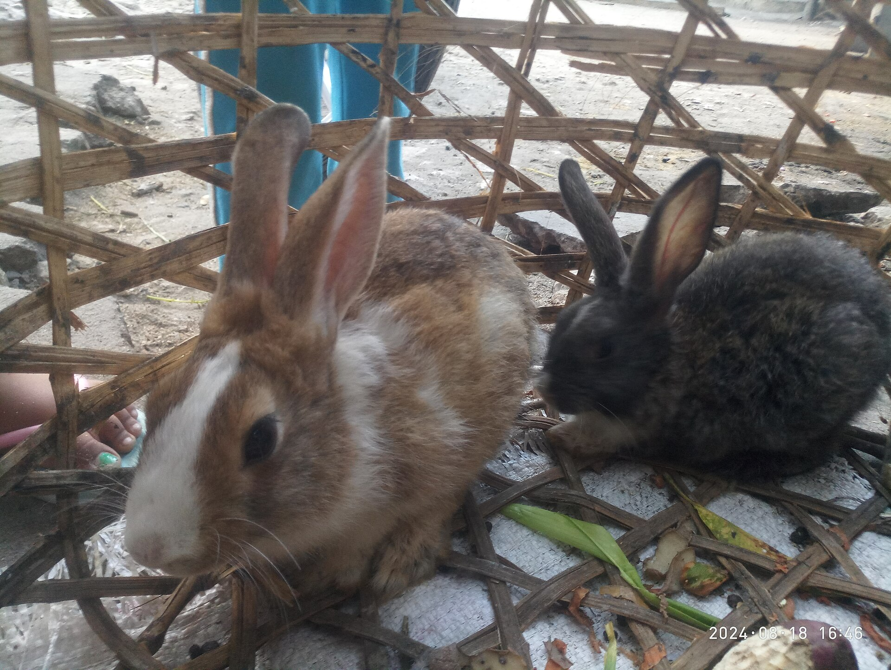

Tout le lapin
Le lapin est un petit animal aux longues oreilles. On le trouve dans la nature, et beaucoup de familles l'adoptent comme animal de compagnie.
Son apparence
Sa queue
Ses oreilles
Ses longues oreilles bleues lui permettent d'entendre les bruits de très loin.
Son pelage
Son pelage peut être blanc, gris, brun ou tacheté.
Une photo de lapin

L'alimentation du lapin est très importante pour sa santé et son bien-être. Le lapin est un animal herbivore qui se nourrit qui se nourrit principalement de foin, qui doit être disponible à volonté, car il permet d'user ses dents et de favoriser une bonne digestion. Il peut également manger des légumes frais comme les carottes, les endives ou le céleri, ainsi qu'une petite quantité de granulés adaptés à ses besoins. Il doit toujours avoir de l'eau propre et fraîche à disposition. En revanche, il faut éviter de lui donner des aliments sucrés ou dangereux pour sa santé, comme le chocolat, les biscuits ou certains aliments destinés aux humains. Une alimentation équilibrée permet au lapin de rester en bonne santé et de vivre longtemps.